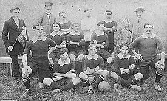
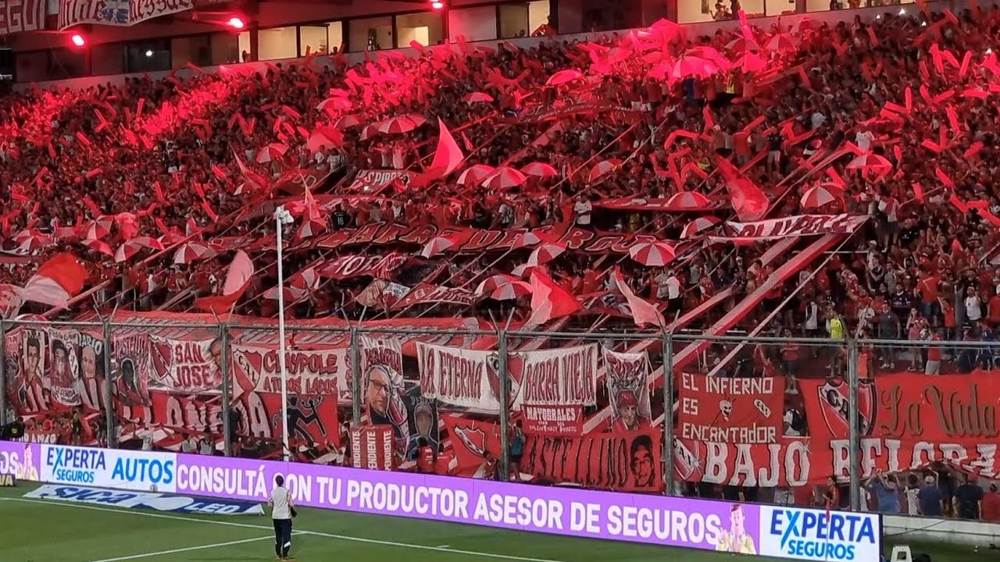
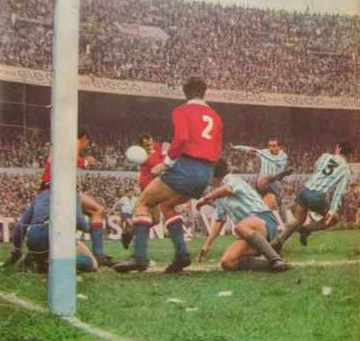

NUESTRA HISTORIA
¿Cuando se fundó?
Independiente fue formado el 4 de agosto de 1904 bajo el nombre de Independiente Foot-Ball Club, aunque su fecha se fundación oficial es el 1 de enero de 1905. Originario de Monserrat, un barrio de la ciudad de Buenos Aires, el club se mudó a Crucecita en 1907 y luego a Avellaneda en 1928.
¿Quienes lo fundaron?
Se unieron 17 emprendedores, entre ellos los hermanos Arístides y Edelmiro Langone, quienes jugaban en el Palte United FC de Barracas al Nord, cuya camiseta blanca fue utilizada en los primeros partidos del IFC. Este núcleo de 25 socios serían los socios fundadores para la posteridad.
.jfif)
Nuestra hinchada
Se estima que Independiente cuenta con alrededor de 4 millones de hinchas en todo el país, ocupa el podio detrás de Boca Juniors y River Plate. Los hinchas de Independiente se caracterizan por ser exigentes y tener poca paciencia con sus jugadores. El principal grupo organizado de barras bravas de Independiente es la Barra del Rojo.
El "Clasico"
Independiente y Racing son los protagonistas del Clásico de Avellaneda. Se enfrentaron por primera vez en 1907, con victoria de Independiente por 3-2. Es considerado como el segundo clásico más importante del fútbol argentino, detrás del Superclásico entre Boca Juniors y River Plate. Independiente tiene una gran ventaja en partidos ganados y se lo considera el padre de su clasico rival.
